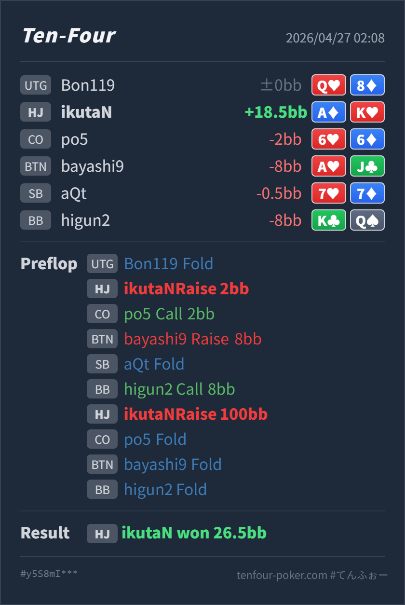

Preflop open
良いA♦K♥ は HJ open の最上位付近です。
主論点は、HJ A♦K♥ で 2BB open したあと、CO call、BTN squeeze 8BB、BB cold call まで入った spot で、100BB all-in に返す判断が自然かどうかです。結論は、AKo はここで fold する hand ではなく、4bet で返すこと自体はかなり自然です。ただし 8BB squeeze に対して 100BB jam は大きいので、GTO基準では小さめの 4bet を本線にしつつ、実戦で相手が広く squeeze / cold call して降りすぎるなら all-in もかなり利益的、という整理がよいです。
A♦K♥A♦K♥ の open と squeeze への 4bet は良いです。見直すなら action ではなく size で、100BB jam は攻撃的です。標準線は 22-26BB 前後の 4bet/call も強く候補になります。AKo の実現率が落ちます。ここは call より raise で pot を取りにいく発想が自然です。AKo は AA/KK を強く block しますが、jam に call されると QQ+ / AK 寄りに当たりやすく、単に「強いから全部入れる」だけでは少し粗いです。AJo や KQo のような広い続行が見えており、この pool には all-in の fold equity と domination value がかなり働きます。exploit としては良い寄せ方です。A♦K♥2BB, CO call 2BB, BTN raise 8BB, SB fold, BB call 8BB, HJ raise 100BB, CO fold, BTN fold, BB fold26.5BB
良いA♦K♥ は HJ open の最上位付近です。
良いが size は攻撃的AKo は AA/KK blocker を持つ clear 4bet hand です。flat より raise が自然ですが、100BB jam はかなり大きく、call される range は濃くなります。
| 論点 | その場で起きがちな見え方 | どこがズレやすいか | 次回の基準 |
|---|---|---|---|
AKo の 100BB jam | blocker もあり、dead money も大きいので即 all-in でよさそうに見える | AKo は強い 4bet hand ですが、jam に call される range は一気に強くなります。小さめ 4bet なら AQ/AJ/KQ などの dominated hand を残せる余地もあります。 | default は 22-26BB 前後の 4bet/call を持ち、相手が広く squeeze して過剰に降りるなら jam に寄せる |
| dead money の見積もり | CO と BB の分まで pot が膨らんでいるので、かなり広く取りにいきたくなる | dead money は jam の価値を上げますが、BTN squeeze と BB cold call の時点で相手 range も条件付きに強くなっています。pot の大きさだけでなく、call されたときの相手 range も同時に見る必要があります。 | squeeze 返しでは 今落ちている額 と call されたときの range をセットで見て、size を決める |
| ストリート | その時点の見え方 | 実ハンドの位置づけ | 評価 | その場の一手 |
|---|---|---|---|---|
| Preflop open | HJ の 2BB open はこの環境では自然です。後ろに broadway や pocket が残るものの、HJ range はまだ上側を多く持てます。 | A♦K♥ は HJ open の最上位付近です。 | 良い | open は問題ありません。 |
| Preflop vs squeeze | CO call 後に BTN が 8BB squeeze、さらに BB が cold call しています。pot は大きい一方、BTN は強い value と blocker bluff、BB は pocket / suited broadway / trap を持ちえます。Hero が call すると CO も参加しやすく、AKo の実現率は落ちます。 | AKo は AA/KK blocker を持つ clear 4bet hand です。flat より raise が自然ですが、100BB jam はかなり大きく、call される range は濃くなります。 | 良いが size は攻撃的 | 標準は小さめ 4bet/call も有力です。相手が広く squeeze して overfold するなら、今回の jam はかなり実戦的です。 |
| Flop | ||||
| Turn | ||||
| River |
AKo は CO call + BTN squeeze + BB cold call でも fold に回す hand ではありません。call より 4bet で返す発想はかなり自然です。4bet する と 100BB jam する は別です。default では小さめ 4bet/call を持ち、相手の squeeze が広い、または 4bet に降りすぎると見えるときに jam へ寄せると整理しやすいです。A♥J♣、BB cold call の K♣Q♠、CO cold call の 6♥6♦ が含まれていました。この広さなら、AKo all-in はかなり利益が出やすいです。AKo でも小さめ 4bet/call の方がレンジ全体を守りやすいです。